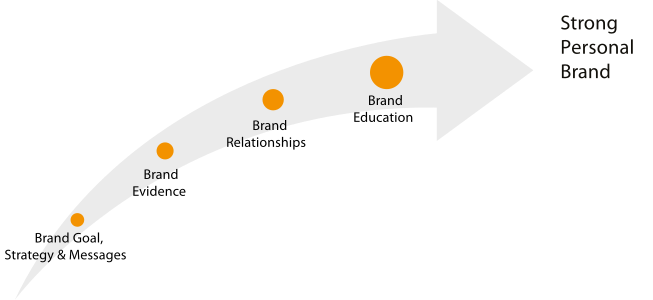

The Branding Journey

Look at this chart and determine where you are on the journey to a strong personal brand. Ask yourself the questions below.
If you’ve answered “no” to most of the questions, don’t despair. Follow the steps in this book to accelerate your branding journey.